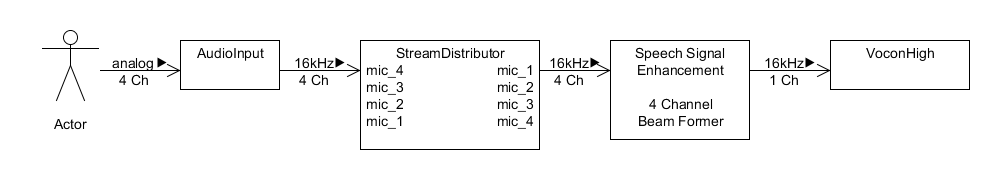
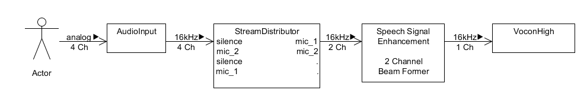
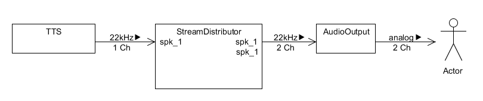
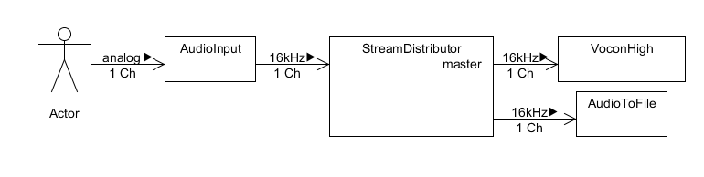

CERENCE SDK - AUDIO STREAM DISTRIBUTOR USER’S GUIDE
Cerence, Inc. provides this document without representation or warranty of any kind. The information in this document is subject to change without notice and does not represent a commitment by Cerence, Inc. The software and/or databases described in this document are furnished under a license agreement and may be used or copied only in accordance with the terms of such license agreement. Without limiting the rights under copyright reserved herein, and except as permitted by such license agreement, no part of this document may be reproduced or transmitted in any form or by any means, including, without limitation, electronic, mechanical, photocopying, recording, or otherwise, or transferred to information storage and retrieval systems, without the prior written permission of Cerence, Inc.
Cerence and the Cerence logo are trademarks or registered trademarks of Cerence, Inc. or its affiliates in the United States and/or other countries. All other trademarks referenced herein are the property of their respective owners.
Scope Of Document
The main scope of this SDK documentation is to serve as user guide for engineers who use the Cerence SDK to develop and deliver project-specific applications.
Overview
The Audio Stream Distributor audio module audio module provides the possibility to distribute the input audio data stream to a configurable number of 1 to n outputs. Thereby each output can be configured individually to one of the following modes:
- audio input stream duplication (-> input one-on-one assigned to output)
- audio input channel picking (-> only specific input audio channels are assigned to output)
- audio input channel re-ordering (-> assignment of input audio channels to output in a specific order)
- a combination of audio input channel picking and re-ordering
Note
The audio input stream duplication is supported for 16-bit PCM and 8-bit encoded audio data. All other modes are supported only with a 16-bit encoded PCM audio data input stream.
The Audio Stream Distributor audio module audio module handles the flow control like follows:
- the first output that runs full activates the flow control by pausing the processing of the incoming data stream
- if all connected outputs are able to handle data again the flow control is deactivated by resuming the processing of the incoming data stream
The Audio Stream Distributor audio module audio module has three internal operation modes. On the one hand this is a master-slave-output concept, on the other hand there are two group modes where all outputs have the same priority.
If the master-slave-operation-mode (OM_MASTER_SLAVE) is configured in the JSON module configuration, the parameter master output defines the master and implicitly all remaining outputs become a slaves.
Only the master output:
- controls exclusively the start and stop of the input’s audio session
In case the group-operation-mode OM_FIRST_START_LAST_STOP is configured the inputs audio session is handled as follows:
- the output receiving the first start session is starting the input’s audio session
- if the sessions of all outputs are stopped the input’s audio session is stopped also
In case the group-operation-mode OM_LAST_START_FIRST_STOP is configured the inputs audio session is handled as follows:
- if the sessions of all outputs are started the input’s audio session is started also
- the output receiving the first stop session is stopping the input’s audio session
Document Conventions
API call examples in this document are shown in C syntax.
Developing Applications
API Reference
The API reference documentation of the SDK Audio Stream Distributor audio module component is included in the Cerence SDK package
at doc/api_reference/audio/audio_module_stream_distributor/. There is a separate folder for each supported programming language
in which the reference documentation can be accessed via the mainpage index.html.
The C API documentation is available at doc/api_reference/audio/audio_module_stream_distributor/c/index.html.
Configuration API Reference
The configuration has to be done in the JSON format as specified in the configuration API reference:
- Overview
- IAudioStreamDistributorConfig - Interface of the ‘AudioStreamDistributor’ (abbr. ‘ASD’) audio module configuration.
- IAudioStreamDistributorOutputConfig - The configuration of an ‘AudioStreamDistributor’ (abbr. ‘ASD’) audio module output.
- ITopLevelAudioConfig - The top-level audio configuration structure.
- ITopLevelConfig - Interface for top-level configuration classes.
- IUserJsonConfig - Defines a verbatim block of json that is used by VoCon High as is.
- IAudioScenarioConfig - The audio scenario configuration.
- IAudioPluginConfig - The audio plug-in configuration.
- IAudioModuleConfig - The audio module configuration.
- IChunkPoolConfig - ChunkPool configuration.
- IAudioFormatConfig - The audio format configuration.
Creating And Configuring
The creation and configuration of an audio module is described in general in the Creating and Configuring Audio Modules chapter of the main Audio User’s Guide.
The configuration of the audio scenario and the Audio Stream Distributor audio module audio module depends on the desired use case and looks like follows.
Reorder Channels
To configure the Audio Stream Distributor audio module to reorder channels the audio scenario and the modules configuration will look like this:
...
{
"name": "recogWithReorderedChannelsScenario",
"audiopaths": [ ["mic", "asd"], ["asd:reordered", "sse"], ["sse", "asr"]]
}
...
{
"type": "AudioStreamDistributor",
"name": "asd",
"input_channel_count": 4,
"master_output": "reordered",
"output_config": [{ "name": "reordered", "input_channel_assignment": [ "4", "3", "2", "1" ]}]
}
...
Given the example from above activating the audioscenario "recogWithReorderedChannelsScenario" will start the Audio Stream Distributor audio module named "asd".
The Audio Stream Distributor audio module audio module is linked into the audio stream following the definitions in the audio scenarios audio-paths section.
Finally there will be a system setup like shown in the following figure.
Pick Channels
To configure the Audio Stream Distributor audio module to pick channels the audio scenario and the modules configuration will look like this:
...
{
"name": "recogWithPickedChannelsScenario",
"audiopaths": [ ["mic", "asd"], ["asd:picked", "sse"], ["sse", "asr"]]
}
...
{
"type": "AudioStreamDistributor",
"name": "asd",
"input_channel_count": 4,
"master_output": "picked",
"output_config": [{ "name": "picked", "input_channel_assignment": [ "4", "2"]}]
}
...
Given the example from above activating the audioscenario "recogWithPickedChannelsScenario" will start the Audio Stream Distributor audio module named "asd".
The Audio Stream Distributor audio module audio module is linked into the audio stream following the definitions in the audio scenarios audio-paths section.
Finally there will be a system setup like shown in the following figure.
Duplicate Channels
To configure the Audio Stream Distributor audio module to duplicate channels the audio scenario and the modules configuration will look like this:
...
{
"name": "promptWithDuplicatedChannelsScenario",
"audiopaths": [ ["tts", "asd"], ["asd:duplicated", "spk"]]
}
...
{
"type": "AudioStreamDistributor",
"name": "asd",
"input_channel_count": 1,
"master_output": "duplicated",
"output_config": [{ "name": "duplicated", "input_channel_assignment": [ "1", "1"]}]
}
...
Given the example from above activating the audioscenario "promptWithDuplicatedChannelsScenario" will start the Audio Stream Distributor audio module named "asd".
The Audio Stream Distributor audio module audio module is linked into the audio stream following the definitions in the audio scenarios audio-paths section.
Finally there will be a system setup like shown in the following figure.
Duplicate Streams
To configure the Audio Stream Distributor audio module to duplicate streams the audio scenario and the modules configuration will look like this:
...
{
"name": "exampleScenario",
"audiopaths": [ ["mic", "asd"], ["asd:stream_one", "asr"],
["asd:stream_two", "to_file"]]
}
...
{
"type": "AudioStreamDistributor",
"name": "asd",
"input_channel_count": 1,
"master_output": "stream_one",
"output_config": [{ "name": "stream_one"},
{ "name": "stream_two"}]
}
...
Given the example from above activating the audioscenario "exampleScenario" will create the Audio Stream Distributor audio module named "asd".
The Audio Stream Distributor audio module audio module is linked into the audio stream following the definitions in the audio scenarios audio-paths section.
Finally there will be a system setup like shown in the following figure.
Version History
| REVISION | DATE | DESCRIPTION |
|---|---|---|
| 1.0 | 10.06.2019 | initial version |